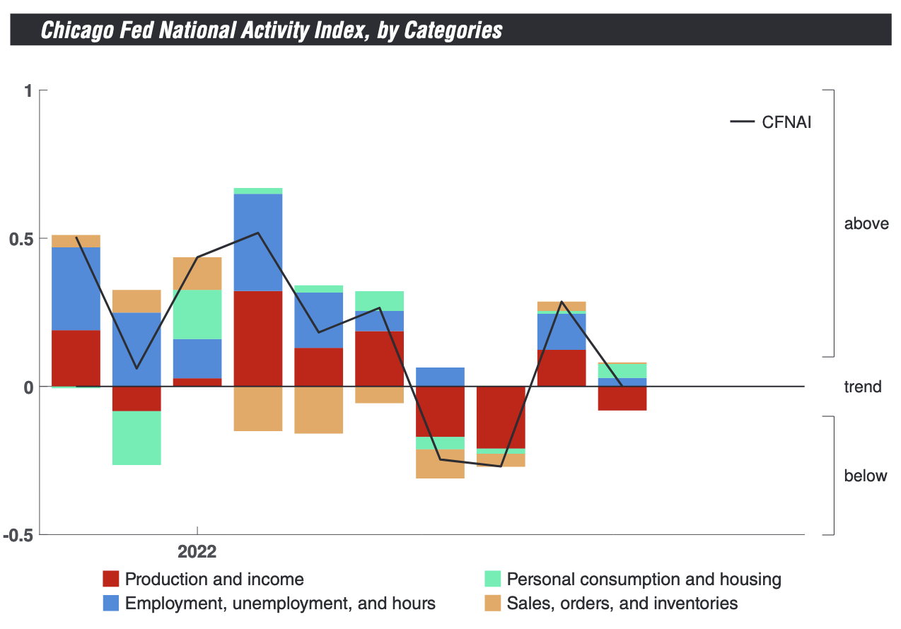

Econ 5120 Macroeconomic Theory
Romer, Unemployment
Introduction
High frequency data
Quick review of production and Solow
Romer model (Romer + Solow)
In class R exercise
Employment
High Freq: Initial Claims
High Freq: National Activity Index
High Freq: Consumer Confidence
High Freq: PMIs
Chapters 4, 5, 6
4 - Introduce a production model
5 - Add investment, consumption, and depreciation (Solow)
6 - Production model of ideas (Romer)
Chapter 4: Production Function
\[ Y = F(K, L) = \bar{A}K^{1/3}L^{2/3} \qquad(1)\]
\(\bar{A}\) - Productivity parameter.
\(K\) - Capital
\(r\) - Rental price of capital
\(L\) - Labor
\(w\) - Wage
Cobb-Douglass (link): \(Y = K^{a}L^{1-a}\)
Output Per Person
Output per person: \(y\equiv Y/L\)
Capital per person: \(k\equiv K/L\)
Output per person in equilibrium:
- \(y^*\equiv \frac{Y^*}{L^*} = \frac{\bar{A}\bar{K}^{1/3}\bar{L}^{2/3}}{\bar{L}}=\frac{\bar{A}\bar{K}^{1/3}}{\bar{L}^{1/3}} = \bar{A}\bar{k}^{1/3}\)
- Output per person is a function of:
Capital per person
Productivity parameter
Chapter 5: Solow Growth Model
\[ Y = F(K, L) = \bar{A}K_t^{1/3}L_t^{2/3} \]
Resource constraint:
\[ C_t+I_t=Y_t \]
Capital accumulation:
\[ K_{t+1}=K_t+I_t-\bar{d}K_t \]
Solving the Solow Model
\[ \underbrace{\Delta K_{t+1}}_{change-in-capital}=\underbrace{\bar{s}Y_t-\bar{d}K_t}_{net-investment} \]
The change in capital stock is equal to the change in investment \(I_t=\bar{s}Y_t\) less depreciation $\bar{d}K_t$. \(I_t=\bar{d}K_t\) is often called net investment.
\[ Y_t = \bar{A}K_t^{1/3}\bar{L}^{2/3} \]
Two unknowns: \(K_t\) and \(Y_t\).
Solow Diagram

Source: Macroeconomics, Jones, 2021
Solow: Ouput & Consumption
Source: Macroeconomics, Jones, 2021
Steady State
\[ K^*= \left( \frac{\bar{s}\bar{A}}{\bar{d}} \right)^{3/2}\bar{L} \]
\[ Y^*=\left(\frac{\bar{s}}{\bar{d}} \right)^{1/2}\bar{A}^{3/2}\bar{L} \]
\[ y^* \equiv \left( \frac{Y^*}{L^*} \right) = \bar{A}^{3/2} \left( \frac{\bar{s}}{\bar{d}} \right)^{1/2} \]
Comparing Models
\[ y^* = \bar{A}^{3/2} \left( \frac{\bar{s}}{\bar{d}} \right)^{1/2} \]
\[
y^*=\bar{A}\bar{k}^{*1/3}
\]
Productivity parameter, \(\bar{A}\) , in Solow model the capital stock depends on productivity.
Capital per person is endogenized
Increased Investment
Source: Macroeconomics, Jones, 2021
Increased Investment
Source: Macroeconomics, Jones, 2021
Rise in Depreciation

Source: Macroeconomics, Jones, 2021
Rise in Depreciation
Source: Macroeconomics, Jones, 2021
Transition Dynamics
If economy is below steady-state, \(K_t<K^*\), it grows.
If economy is above steady-state, \(K_t>K^*\), it shrinks.
Principal of transition dynamics:
the farther below steady state - the faster the economy will grow.
the closer to steady state - slower growth
Solow: Strengths
Production function depends on investment and depreciation
Provides steady-state, countries will be richer when:
high rate of investment
high TFP level
low rate of depreciation
Transition Dynamics - farther from steady-state, faster the growth
Solow Weaknesses
Physical capital is main mechanism for growth
- Quantitatively this only explains a small portion of country differences
Why do countries have different productivity levels and investment rates?
Does not provide a theory for long run growth.
Chapter 6: Growth and Ideas
Two types of goods
Objects - Land, cell phones, oil, jet planes, pencils, …
Ideas - algorithms, formulas, practices, papers, books
Ideas -> nonrivalry -> increasing returns -> pure competition
Intangible Assets
Nonrivalry
Rival goods - if I am using it you cannot.
Nonrival goods - ideas, if I am using an idea so can you.
Computer
Rival - if I am using the computer your use is limited
Nonrival - the design for manufacturing the computer
Increasing Returns
Suppose a new production function:
\[ Y_t=F(K_t, L_t, A_t) = A_tK_t^{1/3}L_t^{2/3} \]
If we double the inputs:
\[ F(2K, 2L,2A)= 4F(K, L, A) \]
increasing returns to scale to ideas and objects taken together.
Fixed Cost - Increasing Returns
Source: Macroeconomics, Jones, 2021
Pure Competition
What is the incentive for innovation?
If we force firms to sell at marginal cost what happens?
Patents, copywrites, trade secrets
How can the government help lower costs?
Romer Model
\[ Y_t=A_tL_{yt} \]
\[ \Delta A_{t+1}=\bar{z}A_tL_{at} \]
Resource constraint:
\[ \bar{L} = L_{yt} + L_{at} \]
Allocation of labor:
\[ L_{at}=\bar{l}\bar{L} \]
Romer Model
Source: Macroeconomics, Jones, 2021
Romer Model Solution
Output per person:
\[ y_t \equiv \frac{Y_t}{\bar{L}}=A_t(1-\bar{l}) \]
Growth rate of ideas:
\[ \bar{g} \equiv \frac{\Delta A_{t+1}}{A_t}=\bar{z}L_{at}=\bar{z}\bar{l}\bar{L} \]
Productivity parameter: \(\bar{z}\), labor spend on ideas: \(\bar{l}\) .
Romer Model Solution
Because the growth rate is constant at \(\bar{z}\bar{l}\bar{L}\) the stock of knowledge is:
\[ A_t=\bar{A_0}(1+\bar{g})^t \]
Output per person:
\[ y_t=A_0(1-\bar{l})(1+\bar{g})^t \]
Romer Output per Person

Source: Macroeconomics, Jones, 2021
Experiment: Increase Population
Source: Macroeconomics, Jones, 2021
Experiment: Changing Research Allocation
Source: Macroeconomics, Jones, 2021
Industrial Commodities
Source: Macroeconomics, Jones, 2021
Romer + Solow
Richer model for explaining gdp per capita growth
Nonrivalry of ideas of Romer
Transition dynamics of Solow
Growth Accounting in the US
Production function:
\[ Y_t= A_t K_t^{1/3}L_{yt}^{2/3} \]
Growth rate of production:
\[ \underbrace{g_{Y_t}}_{production\:growth}=\underbrace{g_{A_t}}_{TFP\:growth\:rate}+\underbrace{\frac{1}{3}g_{K_t}}_{capital\:growth\:contr}+\underbrace{\frac{2}{3}g_{L_{yt}}}_{labor\:growth\:contr} \]
Growth Accounting in the US
Growth rate of production per person, \(Y/L\):
\[ \underbrace{g_{Y_t}-g_{L_t}}_{growth\:of\: Y/L}=\underbrace{g_{A_t}}_{TFP\:growth}+\underbrace{\frac{1}{3}(g_{K_t}-g_{L_t})}_{contr \: from \: capital}+\underbrace{\frac{2}{3}(g_{L_{yt}}-g_{L_t})}_{labor\:composition} \]
Source: Macroeconomics, Jones, 2021
Slowing Economic Growth?
Source: Macroeconomics, Jones, 2021
Long Run Growth Conclusions
Romer: Discovery of nonrival ideas - increase total stock of knowledge.
Think of each country as a Solow economy sitting on top of the Romer long run trend.
Growth in knowledge accounts for overall trend
Transition dynamics dictated by Solow
Long Run Growth Conclusions
Source: Macroeconomics, Jones, 2021
Long Run Growth Conclusions
South Korea has grown faster than the US since 1950
Structural changes have shifted growth path sharply upward (\(\uparrow \bar{s}\))
Institutions have taken advantage of nonrival knowledge.
Nigeria has moved from 15% of US per capita GDP to 3%
Decline in investment rate, \(\bar{s}\).
Absence of institutions led to companies unwilling to invest.
In Class Exercise
Explore Fred Data [link]
Create Fred API Key [link]
Download R Fred Library [documentation]
Explore GDP per capita and Unemployment
Explore Fred Data
Fredr Library
- Link to fredr function documentation [link]
Fredr Library
library(ggplot2)
library(lubridate)
library(dplyr)
UNEMPLOYMENT_ID <- "UNRATE"
GDP_PC <- "A939RX0Q048SBEA"
unemployment <- fredr(UNEMPLOYMENT_ID,
observation_start = ymd(19900101),
observation_end = ymd(20220401),
frequency="q")
print(unemployment, n = 5)# A tibble: 130 × 5
date series_id value realtime_start realtime_end
<date> <chr> <dbl> <date> <date>
1 1990-01-01 UNRATE 5.3 2022-09-27 2022-09-27
2 1990-04-01 UNRATE 5.3 2022-09-27 2022-09-27
3 1990-07-01 UNRATE 5.7 2022-09-27 2022-09-27
4 1990-10-01 UNRATE 6.1 2022-09-27 2022-09-27
5 1991-01-01 UNRATE 6.6 2022-09-27 2022-09-27
# … with 125 more rowsDownload GDP Per Capita
gdppc <- fredr(GDP_PC,
observation_start = ymd(19900101),
observation_end = ymd(20220401),
frequency="q",
units="pc1")
print(gdppc, n = 5)# A tibble: 130 × 5
date series_id value realtime_start realtime_end
<date> <chr> <dbl> <date> <date>
1 1990-01-01 A939RX0Q048SBEA 1.80 2022-09-27 2022-09-27
2 1990-04-01 A939RX0Q048SBEA 1.31 2022-09-27 2022-09-27
3 1990-07-01 A939RX0Q048SBEA 0.552 2022-09-27 2022-09-27
4 1990-10-01 A939RX0Q048SBEA -0.641 2022-09-27 2022-09-27
5 1991-01-01 A939RX0Q048SBEA -2.25 2022-09-27 2022-09-27
# … with 125 more rowsClean up data series
gdppc <- gdppc %>%
select(date, series_id, value) %>%
mutate(series_id = "GDP_PC")
unemployment <- unemployment %>%
select(date, series_id, value) %>%
mutate(series_id = "UNEMPLOYMENT")
print(unemployment, n = 5)# A tibble: 130 × 3
date series_id value
<date> <chr> <dbl>
1 1990-01-01 UNEMPLOYMENT 5.3
2 1990-04-01 UNEMPLOYMENT 5.3
3 1990-07-01 UNEMPLOYMENT 5.7
4 1990-10-01 UNEMPLOYMENT 6.1
5 1991-01-01 UNEMPLOYMENT 6.6
# … with 125 more rowsJoin data series
# A tibble: 5 × 3
date series_id value
<date> <chr> <dbl>
1 1990-01-01 GDP_PC 1.80
2 1990-04-01 GDP_PC 1.31
3 1990-07-01 GDP_PC 0.552
4 1990-10-01 GDP_PC -0.641
5 1991-01-01 GDP_PC -2.25 # A tibble: 5 × 3
date series_id value
<date> <chr> <dbl>
1 2021-04-01 UNEMPLOYMENT 5.9
2 2021-07-01 UNEMPLOYMENT 5.1
3 2021-10-01 UNEMPLOYMENT 4.2
4 2022-01-01 UNEMPLOYMENT 3.8
5 2022-04-01 UNEMPLOYMENT 3.6Plot Time-Series
Wide Data
library(tidyr)
dat_wide <- dat %>%
tidyr::pivot_wider(names_from = c("series_id"))
dat_wide %>%
print(n=10)# A tibble: 130 × 3
date GDP_PC UNEMPLOYMENT
<date> <dbl> <dbl>
1 1990-01-01 1.80 5.3
2 1990-04-01 1.31 5.3
3 1990-07-01 0.552 5.7
4 1990-10-01 -0.641 6.1
5 1991-01-01 -2.25 6.6
6 1991-04-01 -1.85 6.8
7 1991-07-01 -1.43 6.9
8 1991-10-01 -0.165 7.1
9 1992-01-01 1.52 7.4
10 1992-04-01 1.81 7.6
# … with 120 more rowsPlot Scatter
Historical Scatter
Historical Scatter
Historical Scatter
Chapter 7: Labor Market
Labor market explained by supply and demand
Distortions: taxes and firing costs
Compute present discounted values
Value your human capital
Return to college education
U.S. Employment to Population
Fred Data: U.S. Employment Rate
U.S. Unemployment Rate
Fred Data: U.S. Unemployment Rate
Composition of Labor Force
| February 2019 | August 2022 | |
|---|---|---|
| Civilian Population, >16yr | 258 Million | 264 Million |
| Labor Force | 163 Million | 164 Million |
| Employed | 157 Million | 158 Million |
| Unemployed | 6.5 Million | 6 Million |
| Not in Labor Force | 95 Million | 99 Million |
U.S. Unemployment Level
Fred Data: U.S. Unemployment Level
U.S. Labor Force

Fred Data: Labor Force Participation Rate
U.S. Labor Force
Fred Data: Labor Force Participation Rate
U.S. Population
Fred Data: Labor Force Participation Rate
U.S. Population
Fred Data: Labor Force Participation Rate
Supply and Demand
Not static
Jobs created and destroyed monthly
- Example 2018-December: +5.9M, -5.55M
Most unemployment is transitory
Source: Macroeconomics, Jones, 2021
Change in Labor Supply
Suppose an income tax of \(\tau\) per worker
- Worker only keeps: \(w(1-\tau)\)
How does this effect long term unemployment?
Who pays the tax?
Source: Macroeconomics, Jones, 2021
Change in Labor Demand
- Decrease in labor demand
Source: Macroeconomics, Jones, 2021
Wage Rigidity
Decrease in labor demand
Wage is rigid
Hard to pay lower
Government policies
- Minimum wage
Important role in understanding economic fluxuations
Source: Macroeconomics, Jones, 2021
Different Types of Unemployment
\[ actual\: unemployent = \underbrace{(frictional + structural)}_{natural} + cyclical \]
Natural - rate that prevails if economy is neither boom nor recession.
Frictional - Employees changing jobs in a dynamic economy.
Structural - hiring/firing costs, unemployment benefits, minimum wage.
Cyclical - difference between actual and natural rates of unemployment
Bathtub Model of Unemployment
\[ E_t - U_t = \bar{L} \]
\[ \Delta U_{t+1} = \underbrace{\bar{s}E_t}_{emp\:lose\:jobs} - \underbrace{\bar{f}U_t}_{unemp\:find\: new\: jobs} \]
Job separation rate: \(\bar{s}\)
Job finding rate: \(\bar{f}\)
Steady State: \(\Delta U_{t+1} = 0\)
Imaging bathtub with water on and drain open.
Bathtub Model of Unemployment
In steady state:
\[
U^* = \frac{\bar{s}\bar{L}}{\bar{f}+\bar{s}}, \: \: \:u^* \equiv \frac{U^*}{\bar{L}} = \frac{\bar{s}}{\bar{f}+\bar{s}}
\]
Natural rate of unemployment when \(\bar{s} = 0.01\) and \(\bar{f}=0.2\) is:
\[ u^* = \frac{.01}{.2+.01}= 0.048 \approx 5\% \]
World Labor Markets
Fred Data: Labor Force Participation Rate
World Labor Markets
Adverse shocks
Inefficient Labor Institutions
US, Japan, UK replace ~30% of labor income
Spain, France, Denmark ~ 60% of labor income
US ~ 6 months, Europe ~ 5 years
Different Covid-19 strategies
Data issues - western economies more transparent
Hours of Work

Source: Macroeconomics, Jones, 2021
Present Discounted Value
What is $1,000 in five years worth today?
\[ pdv \times (1+R)^5 = $1,000 \]
\[ pdv= \frac{\$1,000}{(1+R)^5} \]
if R = 10%, \(pdv = \$621\).
Present Discounted Value
What is a stream of $100 for 20 years worth today?
\[ pdv = \$100\times \frac{1-\left(\frac{1}{(1+R)}\right)^{20}}{1-\frac{1}{(1+R)}} \]
if R = 10%, \(pdv = \$936\).
Present Discounted Value
One time pdv:
\[ present\:discounted\:value=\frac{future\:value}{(1+interest\:rate)^T} \]
Stream of payments pdv:
\[ pdv = payment\times \frac{1-\left(\frac{1}{(1+R)}\right)^{T}}{1-\frac{1}{(1+R)}} \]
Your Human Capital
Average worker in the economy.
Annual wage $63,000
Start working at 22 and retire at 65 (work 45 years)
Assume R = 3%
\[ pdv = \$63,000\times \frac{1-\left(\frac{1}{(1+0.03)}\right)^{45}}{1-\frac{1}{(1+0.03)}} = \$1.59 Million \]
Rising Return to Education
Source: Macroeconomics, Jones, 2021
Rising Return to Education
Source: Macroeconomics, Jones, 2021
Globalization & US Manufacturing
Fred Data: US Manufacturing Employment
Income Inequality
Source: Macroeconomics, Jones, 2021
Income Inequality
Source: Macroeconomics, Jones, 2021
Next Week
Read chapters 8-9
Assignment 1 due

ECON 5120 | Scott Payseur